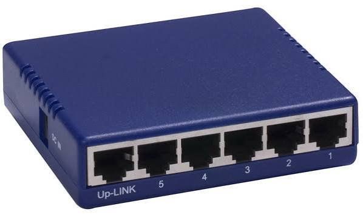
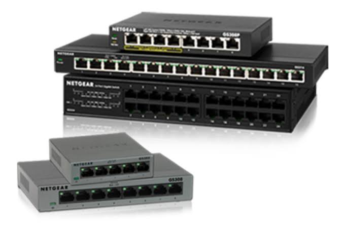

A server is a powerful computer that provides specific data, services, or resources to other computers on a network. It acts like a digital vending machine, waiting for requests from user devices and serving up the correct information. When you open a website, check your email, or stream a video, you are requesting files directly from a server. These machines are built to stay powered on constantly, ensuring that data is always accessible to users around the clock. Ultimately, a server acts as the main storage hub that powers the online services we use every day.

A hub is a basic hardware device used to connect multiple computers together within a single network. It works by taking data received from one connected device and blindly broadcasting it to every other device on the network. Because it cannot read where the data is actually supposed to go, it creates unnecessary network traffic and slows down overall communication. This lack of intelligence also poses security risks, since all connected devices can see information meant for just one specific computer. Today, hubs are largely outdated and have been replaced by smarter technology like switches.

A switch is a smart network device that connects multiple computers and electronics together, just like a hub, but with much greater intelligence. It reads the unique hardware address of every connected device so it knows exactly who is speaking to whom. Instead of broadcasting data to everyone, it sends the information directly to the specific device it was meant for. This targeted delivery greatly improves network speed, reduces digital traffic, and keeps your private data much more secure. In short, a switch acts as an efficient traffic director for a modern wired local network.